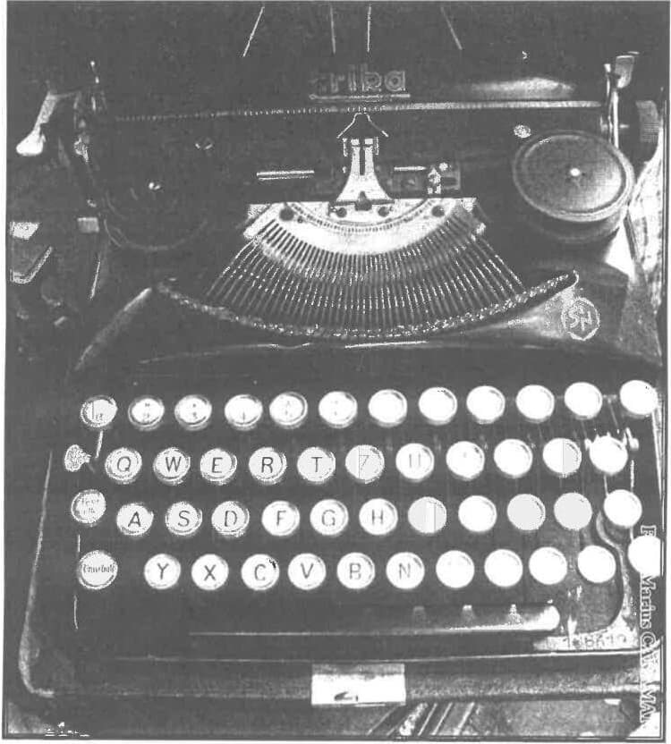

August 1944 cvasidătător de speranțe pentru unii, conținea totuși suficiente elemente din care să se întrezărească intrarea neamului nostru într-o eclipsă, așa cum s-a și întâmplat de fapt, neprevăzându-se că ea va acoperi aproape o jumătate de secol.
Convulsiile au început foarte repede, devenind din ce în ce mai incisive, din partea acelei mâini de oameni care se voiau exponenți ai clasei muncitoare, și care, în pofida numărului de câteva sute, în care erau incluși și simpatizanții, prietenii sau vecinii, participau la guvernarea țării. Această guvernare trebuia să devină foarte repede, prin înlăturarea celor care făcuseră actul de la 23 august, și prin girul partidului muncitoresc român (alias comunist), o guvernare ce de fapt constituia legitimizarea ocupației sovietice.
Gh. Buzatu, în volumul Din istoria secretă a celui de-al doilea război mondial, pag. 335, spune: „După semnarea convenției de armistițiu, instituirea unui regim de ocupație a fost sancționată prin crearea Comisiei Aliate (sovietice) de control, cu prerogative atât de largi, încât putea stânjeni și chiar anula autoritatea guvernelor de la București, inițiativele lor.” Efervescența socială creștea, iar bruma de comuniști agita sub tutela sovietică toate păturile sociale, și în special pe muncitori, care dovedeau totuși o rezistență ce dezicea doctrina marxistă. Atelierele C.F.R. GRIVIțA erau departe de a reprezenta un bastion comunist al clasei muncitoare, așa cum fals erau prezentate. Uzinele MALAXA (viitoarele 23 August și Republica) erau total reticente, iar STB-ul (Societatea de Tramvaie București) nici nu voia să audă de comunism.
țăranii, având adânc înrădăcinat sentimentul proprietății, se temeau ca de moarte de colectivizare, de colhoz, fapt care i-a făcut pe comuniști să adopte un plan diabolic de derutare a celor temători, care însă când s-au trezit, s-a dovedit că era prea târziu.
Generalul Sănătescu de la conducerea guvernului este înlocuit de rege cu generalul Rădescu, cunoscut ca fiind mai ferm și mai radical. În februarie 1945 încep manifestațiile de stradă care au în frunte de cele mai multe ori pe tineri, studenți, elevi, dar și muncitori. La 28 februarie se dezlănțuie punctul culminant al acestor manifestații. Piața Palatului Regal invadată până la refuz de manifestanți este înconjurată de armată. B-dul Elisabeta (între Piața Brătianu și Kogălniceanu) este blocat de STB-iști care opresc tramvaiele unul în spatele celuilalt, încercând să obstrucționeze pătrunderea trupelor spre Piața Palatului. Totuși acestea se regrupează și deschid focul, încercând prin rafale să oblige pe manifestanți să se retragă. În piață, două-trei mașini cu muncitori ce reușiseră să pătrundă sunt răsturnate și li se dă foc. Mulțimea scandează REGELE. Comuniștii, la intervenția rușilor, cer înlocuirea lui Rădescu cu un așa-zis democrat. La uzinele MALAXA muncitorii nu vor să-și schimbe conducerea, refuzând să iasă în stradă pentru contra-manifestație, baricadându-se. Aici se petrece un fapt mai deosebit. O echipă de câțiva comuniști, având în frunte pe Gheorghiu-Dej, încearcă să forțeze poarta de intrare. Dej în genunchi, cu un pistol mitralieră la piept, trage vârtos în porți și în muncitori, forțând intrarea. Este fotografiat, iar a doua zi, în ziarul „Dreptatea”, apare fotografia lui în această postură.
Așa cum se știe, sosește la București Vâșinski, care impune la 6 martie 1945 un guvern comunist condus de Petru Groza.
În țară spiritele sunt din ce în ce mai agitate, în special la sate, deși se trece la așa-zisa împroprietărire, lăsându-se pământuri până la 25 ha. Acțiunea era menită să adoarmă spiritele circa 3-4 ani, pentru că, așa cum se știe, în primăvara anului 1949 Gheorghiu-Dej anunță începerea colectivizării.
Mașini cu muncitori bine selecționați încep o parodie de așa-zisă înfrățire cu țărănimea, mergând duminicile prin sate pentru a le repara chipurile uneltele agricole.
Parada lipsită de conținut, falsă și anostă, nu prinde câtuși de puțin printre țărani, care organic au oroare de colhoz, de colectivizare și de trupele rusești de ocupație. Oamenii harnici asistă neputincioși cum se instalează și se proclamă proletari agricoli toată pleava satului, argații care de-a lungul vieții nu reușiseră să-și înjghebeze o gospodărie ca lumea, iăr acum se trezesc la viața satului cu pretenția de a o conduce și a-i imprima noile forme importate. Puturoșii strigă în gura mare că au fost oprimați de chiaburi, cretinii că învățătorii și popii i-au ținut în întuneric, iar șmecherii și escrocii își fac încet loc printre cei timorați, printre cei gospodari, preluând și difuzând otrava care avea să distrugă ceea ce generații întregi așezaseră pe temelii sănătoase, neconvenabile noii orânduiri. Totul trebuia cutremurat din temelii, firul tradițiilor tăiat, intelectualitatea denigrată, rodul hărniciei pus la stâlpul infamiei și etichetat ca escrocherie și exploatare, rânduiala numită asuprire și teroare burgheză, competența apreciată ca o verigă făcând parte dintr-un lanț conceput de o mână de venali și decăzuți moral care, spuneau ei, cu biciul puterii în mâini i-au ținut ferecați pe cei obidiți.
În locul ierarhiei răsturnate (pentru că la acest principiu noua dictatură nu renunța, ba chiar mai mult o înrădăcina sub forma unei discipline oarbe) ce trebuia instalat? Omul care nu gândește pentru că trebuie să execute fără discernământ tot ceea ce primește pe calea noii ierarhii, deoarece pentru el gândește partidul. Fiecare are deasupra lui pe un altul care știe mai bine și pe măsură ce ne apropiem de vârful piramidei, trebuie acreditată ideea că acolo, sus, se află chintesența poporului.
Toți acești pioni urmau să se învăluie în misterul secretului, totul, fiecare hârtiuță, devenind secret de stat, fiecare notiță ridicată la rangul de pecete domnească, ce trebuie păzită cu strășnicie, să rămână o necunoscută pentru muritorul de rând, pentru marea masă înnobilată cu minciuna odioasă că se află totuși la conducere. Dar vai, ajunși în vârful piramidei se constată că nici acolo gândirea nu este la ea acasă, pentru că și pentru ei gândesc alții de dincolo de hotarele acestui pământ românesc, gândesc cei care ne-au acaparat după ce au descoperit rețeta fericirii oamenilor, pe care acum încep să o exporte cu argumentul armelor și tancurilor, cu logica învingătorului. Învingător care a reușit să adoarmă chiar și spiritul umanitar ce se lăsa așteptat din partea conducătorilor unor popoare civilizate, conducători pe care istoria îi va taxa cum se cuvine, datorită abandonării unor națiuni care meritau altă soartă.
De-a valma, neținându-se seama că pentru unii s-a început măcelul celui de-al doilea război mondial (Polonia), că alții fuseseră cotropiți (Cehoslovacia), că Ungaria luptase până în ultima clipă alături de învinși sau că noi românii întorsesem armele prematur și fără o analiză temeinică a consecințelor, crezând în false promisiuni, de-a valma spun, toți au fost băgați în același cazan, sortiți să fiarbă o jumătate de secol în coșmarul unei sumbre experiențe istorice. Experiment al depersonalizării individuale și colective, al ștergerii originii etnice de limbă și tradiție. Românul trebuia să afle de originea slavă a limbii lui prin intermediul lui Alexandru Graur. Trebuia să-și șteargă din memorie că are o istorie proprie și să învețe de la Mihai Roller că și-a câștigat independența datorită țarului Rusiei și că sărmanul Eminescu a fost mare și genial pentru că a scris Împărat și Proletar.
Pentru a da semidoctului atestarea falsei valori, pentru a-l face să creadă măcar pe jumătate că reprezintă o nouă și autentică valoare, s-a trecut din 1945 la fabricarea de diplome prin așa-zisa facultate muncitorească de doi ani. Noi aveam la acea dată muncitori destui, stăpâni pe meseria lor, dar nu din aceia erau recrutați cei ce urmau a fi școliți, ci din cei care, certați cu cartea, socoteau că acum a sosit vremea lor și că intrând în partidul muncitoresc și-au găsit vocația vieții. Acțiunea nici nu estate prea mult gândită, ea fusese experimentată de peste 25 de ani în țara vecină și învingătoare.
Acești ani au fost începutul marelui genocid. Atunci s-a sfârtecat etica și moralitatea acestui neam, s-au pervertic sufletele, interzicându-se până și termenii de spiritualitate, psihic, neam, națiune, credință, suflet, tradiție. Trebuia să pătrundă puternic în conștiința acestui neam că el trăiește cu adevărat în prezent potrivit aspirațiilor lui seculare, că 23 august este singurul reper de valoare al lui, înaintea acestui moment existând întuneric și urgie, iar după el zorii luminoși.
Intelectualii trebuiau să învețe să scrie după indicațiile lui Novicov, din cartea Pentru literatura vieții noi, în care se acredita cu aplomb că de pe masa fiecărui scriitor nu trebuie să lipsească Scânteia, că în orice inspirație trebuie să se regăsească cultul pentru marele genial și marele popor vecin, căruia îi datorăm totul nu numai din acel nefericit august. Nu a rămas nimic neîntinat, nimic de valoare neterfelit sau netrecut prin mocirla unor mlaștini care se arătau din ce în ce mai ucigătoare. Și, pentru ca desființarea să fie cât mai eficientă și totală, a fost îmbrăcată în haina celei mai cumplite terori din istoria acestui neam, ce urma să desăvârșească această operă distructivă.
Voi încerca succint să trec în revistă situația studențimii din acei ani.
Toamna anului 1944 aduce o noutate în viața universitară a ultimilor ani. În timpul guvernării antonesciene, în București au existat, în afara celor de stat, trei facultăți politehnice: ABASON, ION IONESCU și HERȘCOVICI, precum și o facultate de medicină pentru evrei. Odată cu noua orientare se produce normalizarea acestei situații prin eliminarea măsurilor discriminatorii anterioare și înglobarea acestor studenți în instituțiile oficiale existente. Astfel, în anul școlar 1944-1945, la Facultatea de Construcții a Școlii Politehnice din București numărul de studenți a devenit cam cu 60% mai mare.
Noii veniți au fost primiți cu multă înțelegere, relațiile în acea fază fiind colegiale, de multe ori cu compasiune față de cei care până nu demult fuseseră scoși să curețe de zăpadă străzile Bucureștiului, deși mulți români din acea perioadă își dădeau viața pe front. Revista Magazin Istoric publica de altfel prin anii '70-'80 o scrisoare de mulțumire pentru fostul ministru al învățământului din timpul regimului Antonescu — prof. Ion Petrovici — din partea unui grup de intelectuali evrei din Israel.
În toamna aceluiași an, Ministerul Învățământului dispune, contrar tradiției, deschiderea cursurilor universitare fără slujbă religioasă. Un grup de studenți, dintr-un mănunchi de prieteni, am înaintat atunci un memoriu de protest Ministerului Învățământului, Patriarhiei Române, Rectoratelor, Academiei Române și tuturor personalităților din țară. Desigur, totul a rămas fără efect.
Începând cu acest an 1945 unul din colegi a procurat o mașină de multiplicat și am început să scoatem o revistă săptămânală — „Neamul Românesc” — al cărei titlu ne-a fost inspirat de publicația cu același nume a lui Nicolae Iorga. Ea avea în colțul din stânga sus imprimată prin puncte harta României Mari. Revista, pretențios spus, cuprindea în câteva pagini articole privind păstrarea specificului național în tentativa de internaționalizare a comunismului, apoi informații despre cei ce se instalaseră la cârma statului, oameni neavând nimic comun cu acest pământ — nici măcar numele — sau cu aspirațiile noastre, venetici crescuți la sân străin având cinismul și obrăznicia de a o numi mamă pe vecina de la răsărit.
Această publicație pe care o scoteam în circa o mie de exemplare o difuzam tot noi, punând-o în cutii poștale la adrese în prealabil bine identificate, ale diferitelor personalități. Datorită lipsei de hârtie, publicația și-a încetat apariția în 1947.
Singura posibilitate oficială a românului de a-și manifesta sentimentele naționale în acei ani, fără a protesta deschis împotriva ocupanților, dar mai ales împotriva celor care îi susțineau, era în a aclama cu orice ocazie instituția simbol care ne adusese Independența din 1877, Marea Unire din 1918 și cea mai democrată Constituție din Europa în 1923: REGALITATEA.
Acesta este contextul în care s-a desfășurat Marea manifestație din 8 noiembrie 1945 din Piața Palatului Regal, regele fiind totuși plecat din București, deci nefiind un posibil autor moral al acestei manifestații. A fost un prilej pentru a arăta atașamentul față de Coroană, care la acea oră reprezenta simbolul anticomunismului. Imnul național român, Imnul Regal Trăiască Regele a răsunat atunci din zeci de mii de piepturi, cu ocazia zilei onomastice regale Sfinții Arhangheli Mihail și Gavril, cutremurând văzduhul Pieței Regale. Coloana vertebrală a acestei manifestații o constituia tineretul, în special studenții și elevii.
Ei, indiferent de opinii, se grupaseră în jurul celor două formații politice — fără a se înscrie neapărat — care erau oficial recunoscute: Partidul Național țărănesc și Partidul Național Liberal. Cei care simțeam pulsând încă viu sentimentul național și trăiam profund în conștiința noastră drama care se abătuse asupra națiunii române, nu puteam rămâne indiferenți. Astfel s-a canalizat acest spirit curat de entuziasm, fără cea mai vagă urmă de interes, către un alt simbol al rezistenței românești a cărui etică și verticalitate vor rămâne înscrise în istoria noastră națională: IULIU MANIU.
Din masa studenților români, câțiva se detașează devenind comuniști, ajungând astfel foarte repede în posturi importante, alții se transformă într-un conglomerat necomunist, dar amorf, iar o parte, nu puțini, încearcă să facă opoziție activă, utilizând și cadrul legal de care am amintit mai sus.

Aceasta era atmosfera generală în care debutează anul 1946. În luna mai se petrec evenimentele bine cunoscute de la Cluj, când căminul studențesc este atacat de muncitorii de la fabrica DERMATA, devenită ulterior CLUJANA. În semn de solidaritate cu colegii din Cluj și pe fundalul nemulțumirilor acumulate, în București, Politehnica declanșează grevă generală. Se anunță începerea ei printr-un miting care urma să se țină în Marele Amfiteatru. În ajun sunt date jos tablourile marilor dascăli, bărboșii cum li se mai spunea: Marx, Engels, Lenin, Stalin.
Mitingul se deschide în Marele Amfiteatru care era arhiplin, total neîncăpător. În prezidiu cinci studenți. Se dă citire moțiunii de protest în care se cere:
1. Încetarea acțiunilor agresive împotriva studenților din Cluj, atacați în cămin de un grup de muncitori de la DERMATA, stabilirea vinovaților și sancționarea lor.
2. Încetarea acțiunilor samavolnice privind bursele și taxele școlare care se făceau total discriminatoriu pentru studenții români.
3. Deschiderea cursurilor universitare cu serviciu religios.
4. Încetarea presiunilor asupra profesorilor de a primi ca asistenți cadre total necorespunzătoare.
5. Îmbunătățirea urgentă a alocațiilor pentru hrana studenților de la căminul Barbu Delavrancea, aflați într-o stare de subnutriție avansată.
În timpul citirii acestei moțiuni se produce o ușoară rumoare, anunțându-se din student în student că sosește Agronomia. Trebuie să precizez că în acei ani, Școala Politehnică, în afară de facultățile clasice, cuprindea sub același rectorat Agronomia și Arhitectura.
Studenții de la Agronomie au sosit într-un mod cu totul impresionant, de la Șosea, unde se află și acum sediul lor, încolonați cu Drapelul Tricolor în frunte și cântând Deșteaptă-te, române și Pe-al nostru steag. Sunt primiți cu ovații în această înghesuială care devine sufocantă.
Se cere de către cei din prezidiu prezența rectorului. Acesta ne transmite că va veni, dar întârzie, fiind în discuții cu ministerul. Către prânz sosește rectorul, prof. Petre Sergescu, ilustru matematician, plecat apoi în Franța ca profesor la Sorbona.
Acesta, lac de apă, promite că va preda memoriul guvernului și ministrului învățământului. Suntem insistent rugați să părăsim amfiteatrul, asigurându-ne de toată solicitudinea.
Deși cei nou veniți în toamna lui 1944 nu au participat la grevă, totuși la un moment dat atmosfera se încinge datorită câtorva veniți acolo pentru a cere sistarea grevei. Se strigă că printre noi sunt agitatori care nu sprijină revendicările noastre și se cere plecarea lor din sală.
În acest vacarm intră în amfiteatru un sublocotenent. Cere să se facă liniște, ce o dată realizată îi dă posibilitatea să vorbească. Face însă imprudența să rostească o singură frază: Vă ordon să părăsiți sala. Identificat ca făcând parte din Divizia Tudor Vladimirescu, constituită în Rusia, este huiduit și obligat să plece în fluierături.
Un student venit de la rectorat anunță că Memoriul a fost transmis și că rectorul ne roagă din nou insistent să părăsim amfiteatrul. De la Căminul Politehnicii ni se comunică hotărârea comitetului de acolo de a ne trimite hrană rece — de fapt pâine și mămăligă — în caz că va trebui să se stea și peste noapte.
Dar în același timp suntem anunțați că Politehnica este înconjurată de armată, curtea find înțesată de militari.
După restabilirea liniștii, studenții de la tribună anunță că greva va continua până la satisfacerea doleanțelor. Se fixează totodată pichete de greviști care să oprească intrarea la cursuri a acelora care se opuneau acestei acțiuni și care erau în minoritate.
În momentul în care am ieșit din amfiteatru pentru a vedea ce se întâmplă afară, am rămas uluiți. Pe lângă zidurile exterioare ale clădirilor din curtea Politehnicii erau instalați ostași, umăr la umăr, cu pistol mitralieră a piept. Toți erau gradați de la sergent în sus. Ne priveau cu multă simpatie și ne mai și încurajau, spunându-ne că ei n-au încotro pentru că sunt în serviciu comandat. Trebuie să accentuez că nu a existat din partea acestora nici cel mai mic gest de ostilitate.
Era după-amiază, către orele 17. În curtea principală de la ieșirea spre Polizu ne aștepta altă surpriză. Întrucât porțile de fier fuseseră ferecate, în stradă ne așteptau două camioane cu muncitori înarmați cu răngi. Hotelurile din jur erau înțesate cu agenți de siguranță. Nu s-a ieșit pentru a nu se da naștere la bătăi de stradă, deși noi eram mai numeroși. S-a început strecurarea câte unul-doi pe o poartă laterală, ce corespundea cu clădirea Liceului Industrial Polizu. Un alt grup a început să poarte discuții prin grilaj cu muncitorii. În timp ce în curte rămâneau din ce în ce mai puțini, muncitorii s-au retras și ei nefiind prea convinși de misiunea lor muncitorească. Deși spre seară ne-am retras cy toții, greva a continuat și în zilele următoare, numai trei zile însă, când, pe de o parte s-a comunicat însușirea moțiunii de către autorități, iar pe de altă parte, fiindcă cei noi veniți în Politehnică nu au putut fi determinați să se solidarizeze cu masa greviștilor.
Au urmat imediat descinderi ale Siguranței Statului la căminul studențesc Barbu Delavrancea de la șosea, făcându-se arestări, deși o serie de studenți avertizați reușiseră să fugă. Studenții de la Facultatea de Arhitectură, mai omogeni și mai fermi, au refuzat începerea cursurilor până în toamna anului 1946.
Această generație 1948 s-a ridicat cu toate puterile ei ca un zid de apărare în fața cataclismului care amenința ființa neamului românesc. Ea nu a fost o generație anti, ci una de apărare a tuturor virtuților și valorilor noastre — O GENERAțIE SCUT.
Comentarii